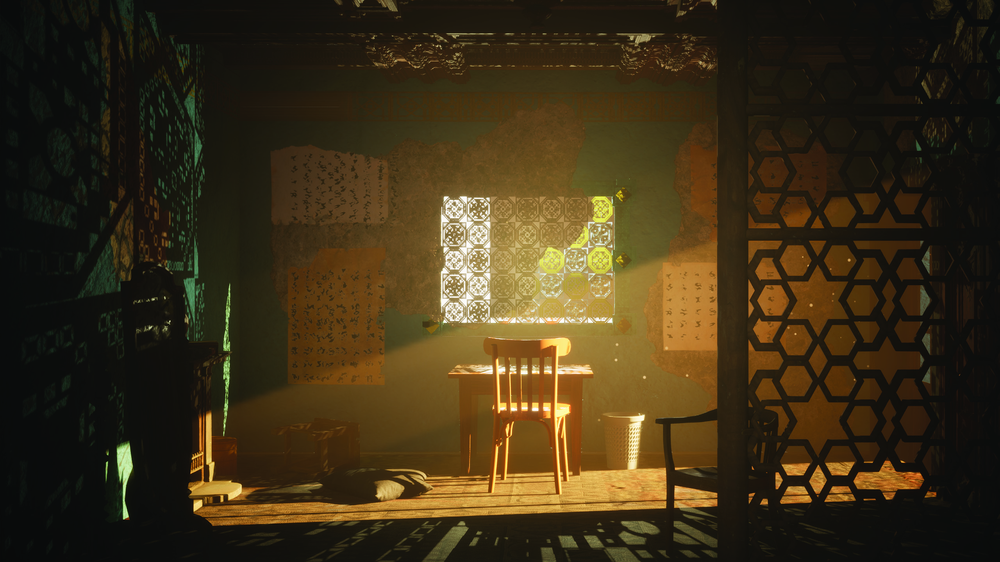
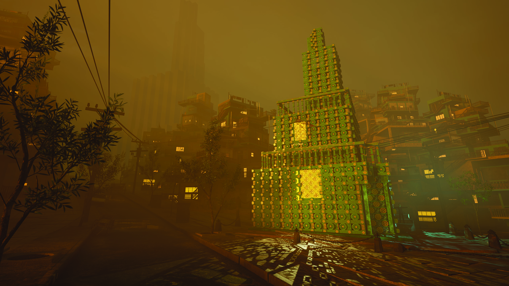
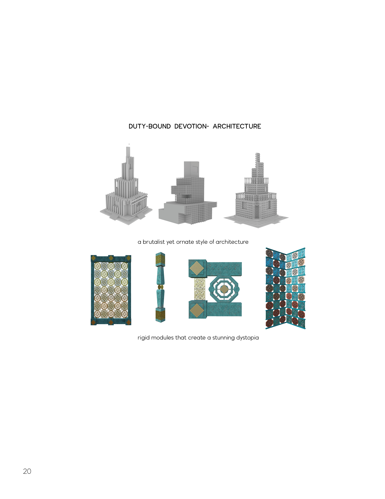
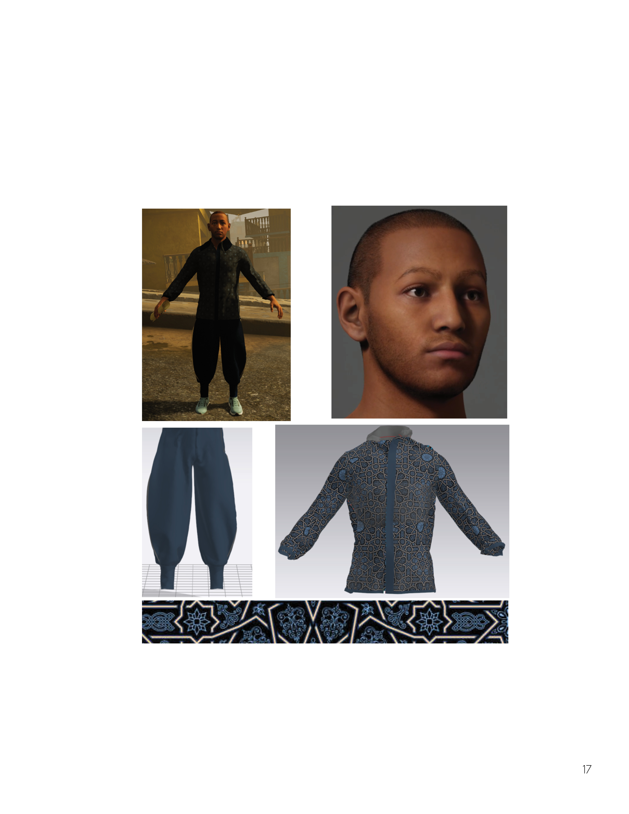

Worldbuilding · Cinematic Environment
Malari is a world where theism is overarching, visible in every nook and corner, through ornate art and brutalism. Poverty is shrowded in the shadows of the deity, which has brought inhabitants to a trance of sobriety.



